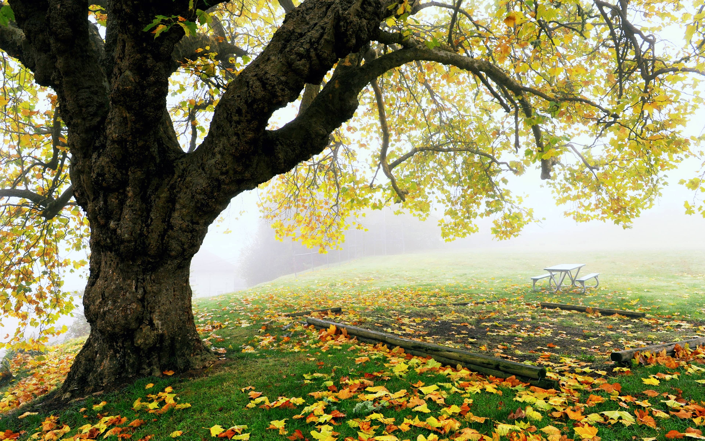
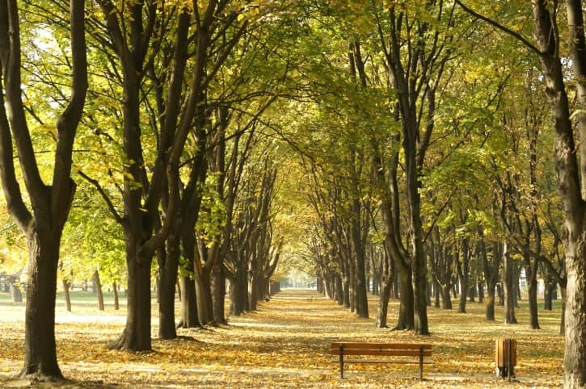

TREES SHIELD US FROM UV RAYS
Skin cancer is the most common form of cancer in the United States. Trees reduce UV-B exposure by about 50 percent, thus providing protection to children on school campuses and playgrounds - where children spend hours outdoors.
TREES CREATE ECONOMIC OPPORTUNITIES

Fruit harvested from community orchards can be sold, thus providing income. Small business opportunities in green waste management and landscaping arise when cities value mulching and its water-saving qualities. Vocational training for youth interested in green jobs is also a great way to develop economic
TREES COOL THE CITY

Average temperatures in Los Angeles have risen 6°F in the last 50 years as tree coverage has declined and the number of heat-absorbing roads and buildings has increased. Trees cool the city by up to 10°F, by shading our homes and streets, breaking up urban “heat islands” and releasing water vapor into the air through.
TREES BRING DIVERSE GROUPS TOGETHER

Trees host complex microhabitats. When young, they offer habitation and food to amazing communities of birds, insects, lichen and fungi. When ancient, their trunks also provide the hollow cover needed by species such as bats, woodboring beetles, tawny owls and woodpeckers. One mature oak can be home to as many as 500 different species. Richmond Park is full of such trees, which is one of the reasons it has been designated a National Nature Reserve and Site of Special Scientific Interest.
TREES IMPORTANCE IN HEALTHCARE
The canopies of trees act as a physical filter, trapping dust and absorbing pollutants from the air. Each individual tree removes up to 1.7 kilos every year. They also provide shade from solar radiation and reduce noise. Over 20 species of British trees and shrubs are known to have medicinal properties. The oil from birch bark, for example, has antiseptic properties. Research shows that within minutes of being surrounded by trees and green space, your blood pressure drops, your heart rate slows and your stress levels come down.